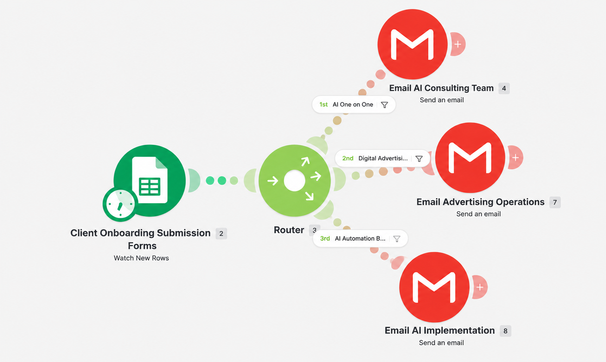

Client Onboarding Automation Overview
Client onboarding can require someone to review each new submission, determine which internal team is responsible, and manually forward information to the correct group. As submission volume grows, this process can create repetitive administrative work, delays, and inconsistent internal handoffs.
This project demonstrates how client onboarding automation and conditional workflow routing can streamline that process. The workflow monitors incoming onboarding submissions, evaluates predefined business rules, and automatically notifies the appropriate operational team.
Challenge
Reduce manual review and routing of new client onboarding submissions across multiple internal teams.
Automation Solution
Build a Make.com onboarding workflow that monitors new submissions, applies conditional routing logic, and sends targeted notifications.
Operational Impact
Create a repeatable onboarding process that improves consistency, reduces manual coordination, and supports faster internal handoffs.
Client Onboarding Workflow
The workflow below shows how a new client onboarding submission moves through the automated process—from the original submission through conditional routing and internal team notification.

How the Client Onboarding Automation Works
- Google Sheets monitors the client onboarding submission source for new records.
- When a new submission is detected, Make.com retrieves the onboarding information.
- A Make.com router evaluates the submission against defined business rules.
- The submission is directed into the appropriate workflow path based on the type of service or operational support required.
- The appropriate internal team receives an automated Gmail notification containing the onboarding information.
- The workflow creates a consistent internal handoff without requiring someone to manually review and forward every submission.
Conditional Workflow Routing
The routing layer is the core of this business process automation. Instead of treating every onboarding submission the same way, the workflow evaluates the information against defined conditions and directs it to the team responsible for the next step.
- AI consulting submissions are routed to the consulting team.
- Digital advertising submissions are routed to advertising operations.
- AI automation or implementation submissions are routed to the implementation team.
This conditional routing structure allows one centralized client onboarding process to support multiple operational paths while keeping the workflow consistent and manageable.
Automation Tools & Methods
Workflow Challenges & Problem Solving
One of the key considerations was making sure each client onboarding submission followed the correct routing path. An automation can run successfully from a technical perspective and still create operational problems if its business rules or routing logic are incorrect.
Testing therefore focused on validating each route independently, confirming that the correct conditions triggered the correct workflow path, and verifying that the appropriate team received the expected notification.
The workflow was also structured so additional onboarding paths could be added later without redesigning the entire automation.
Operational Impact
The value of this workflow extends beyond automating a single task. It creates a structured and repeatable client onboarding process that can support more consistent operations as submission volume or service offerings grow.
- Reduces repetitive manual review and forwarding of client onboarding submissions.
- Creates a more consistent internal handoff process.
- Helps ensure onboarding information reaches the correct operational team.
- Supports faster internal response to new client submissions.
- Reduces dependence on individual staff members remembering routing requirements.
- Creates a scalable workflow framework that can support additional teams, services, or routing conditions.
Operations & Automation Skills Demonstrated
Have a Business Process That Needs Improvement?
Doe Farm Solutions helps businesses identify repetitive tasks, inefficient workflows, and opportunities for business process improvement and workflow automation. Let's discuss whether a practical automation solution could improve the way your business operates.
Schedule a Free 15-Minute Consultation